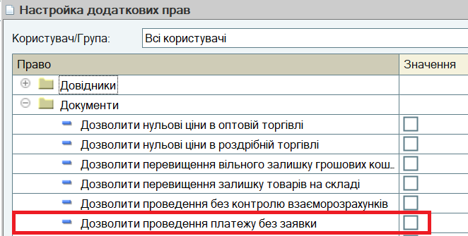
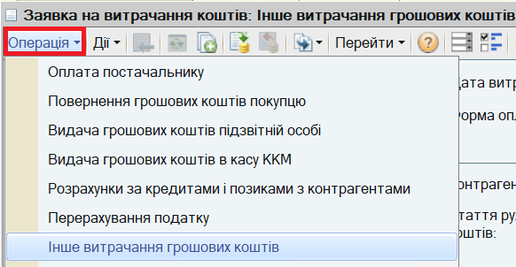
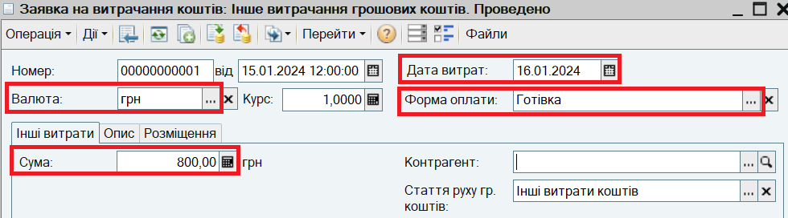
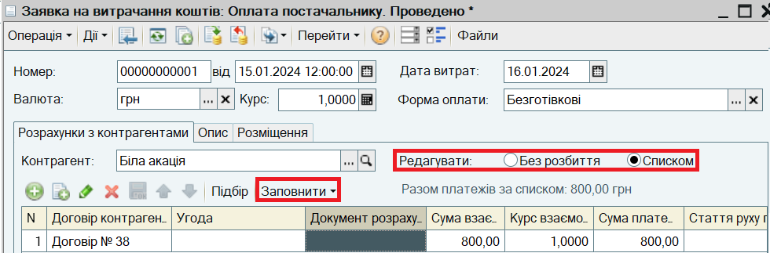
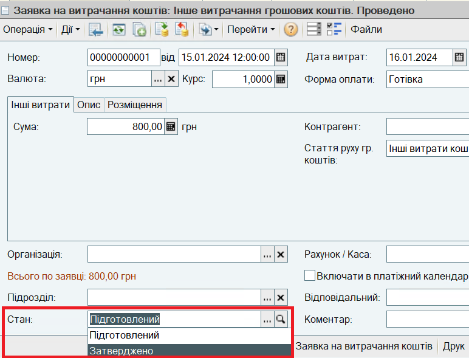

Для погодження витрачання грошових коштів використовується документ Заявка на витрачання грошових коштів.
1. В настройках додаткових прав користувача (Сервіс - Користувачі - Настройки додаткових прав користувачів) скиньте прапор Дозволити проведення платежу без заявки в групі Документи:

Тепер користувач може проводити документи списання грошових коштів тільки за наявності затвердженої заявки.
2. Відкрийте список документів Заявка на витрачання грошових коштів. Для цього в меню Документи виберіть пункт Грошові кошти, підпункт Заявки на витрачання грошових коштів.
Створіть новий документ Заявка на витрачання грошових коштів. Встановіть вид операції Інше витрачання грошових коштів.

3. Заповніть заявку:

ПРИМІТКА. Документ Заявка на витрачання грошових коштів на оплату постачальнику може бути оформлений на підставі документа Замовлення постачальнику або Надходження товарів і послуг.
ПОРАДА. При формуванні заявки за кількома замовленнями постачальника (за кількома накладними), інформація про замовлення (накладні) вводиться в табличну частину документа (Розшифровка платежу). Для цього перемикач Редагувати потрібно встановити в положення Списком.

4. Проведіть заявку за кнопкою ОК.
5. Заявку проведено в Стані Підготовлений. Надалі документ відкриває фінансовий директор (контролер) і затверджує:

6. Тепер на підставі Заявки на витрачання грошових коштів може бути введений Видатковий касовий ордер або Платіжне доручення вихідне.
Наступний розділ: "Встановлення цін клієнтам торгового підприємства"